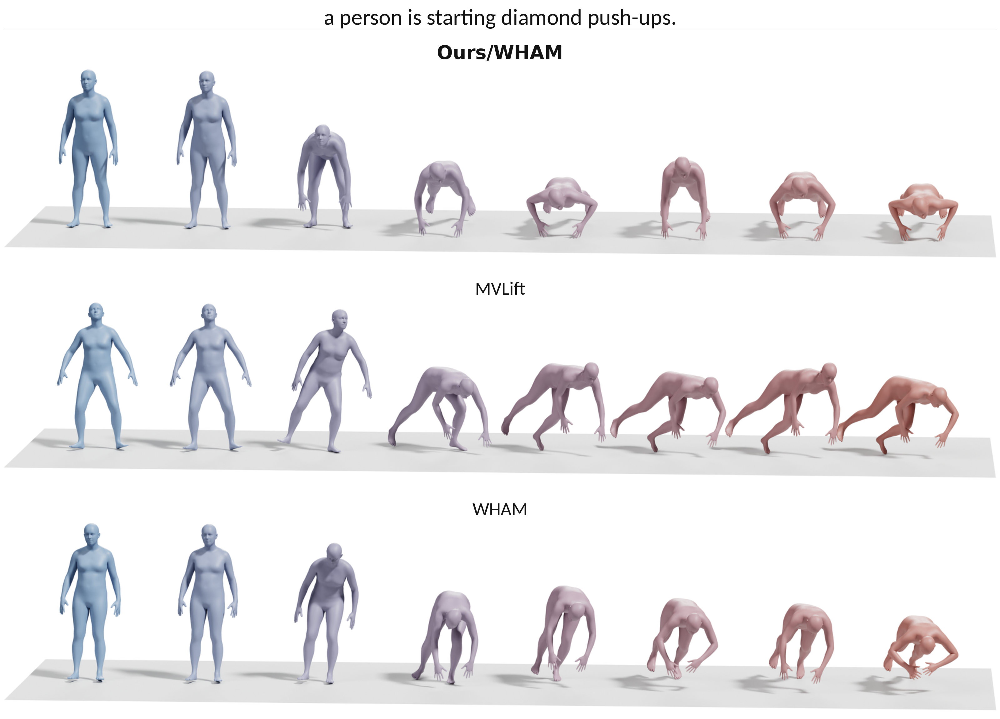
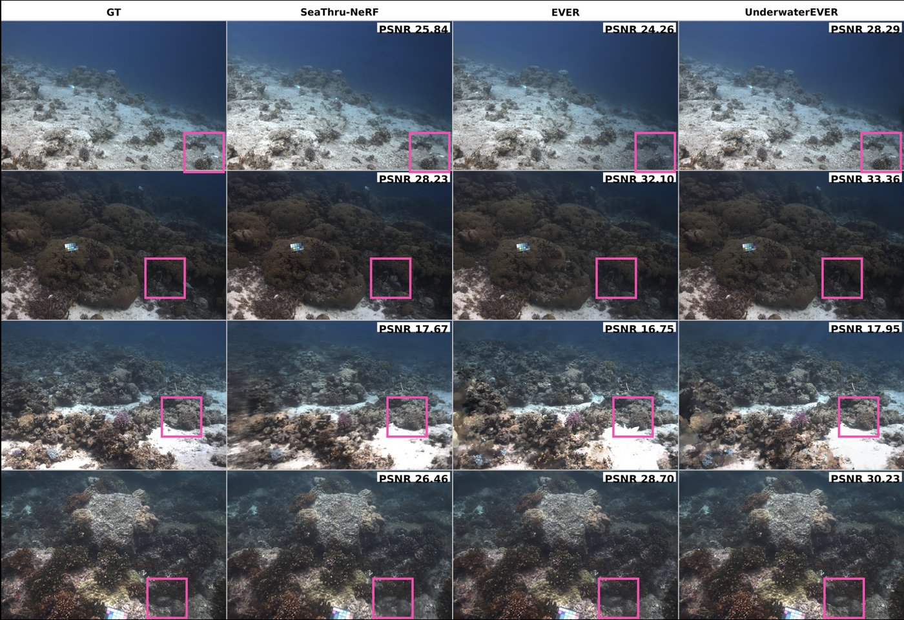
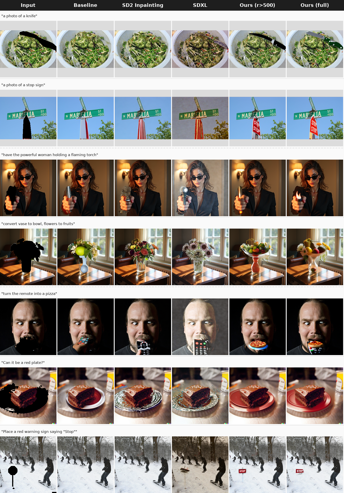
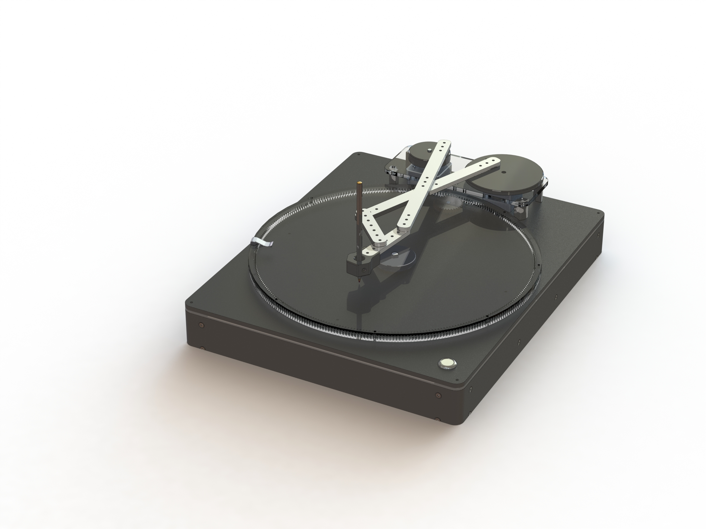
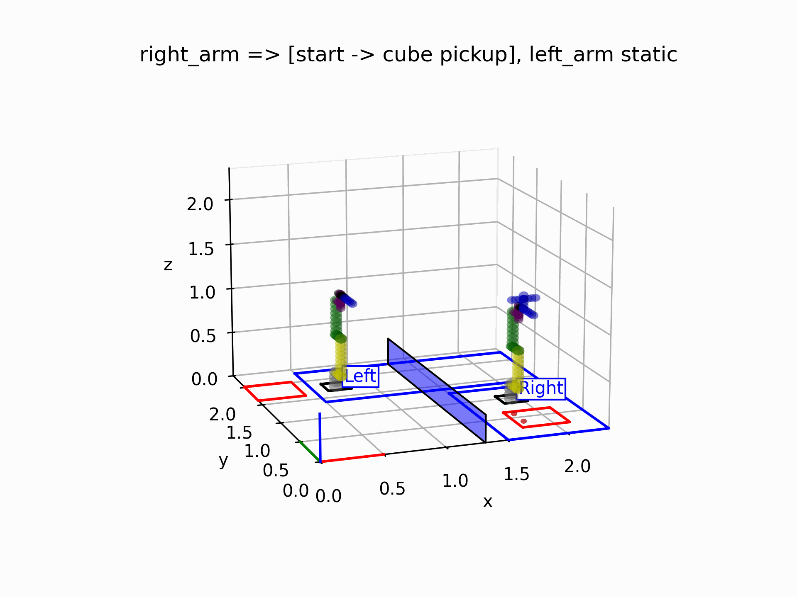
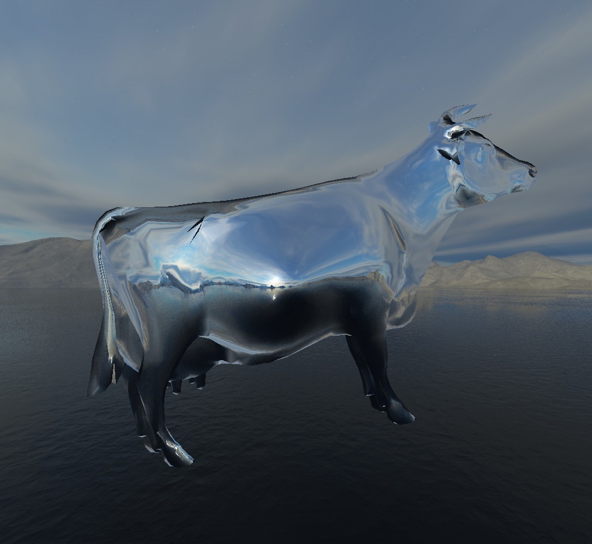

Merav Keidar
MSc Student · Computer Science · Technion
I am advised by Or Litany (Technion) and Rajalakshmi Nandakumar (Cornell Tech). My research is in 3D computer vision, neural scene representation, and radar perception for autonomous systems.

Publications

VideoMDM: Towards 3D Human Motion Generation From 2D Supervision
A diffusion-based framework that trains 3D human motion priors directly from accurate 2D poses extracted from monocular videos, without any 3D ground truth.
arXiv / code / project page
Projects

Physics-informed underwater novel-view synthesis at real-time speed, with free scene dewatering at inference.

Text-guided image inpainting pipeline extending Stable Diffusion 2 with four algorithmic improvements and a full evaluation framework.

A real-life pintograph drawing machine paired with a Grasshopper simulator and interactive GUI.

Dual-arm UR5e manipulation using RRT* planning in configuration space, with collision avoidance, inverse kinematics, and real robot execution.

Real-time 3D rendering GUI built with OpenGL, featuring configurable shaders, mesh loading, and interactive lighting.